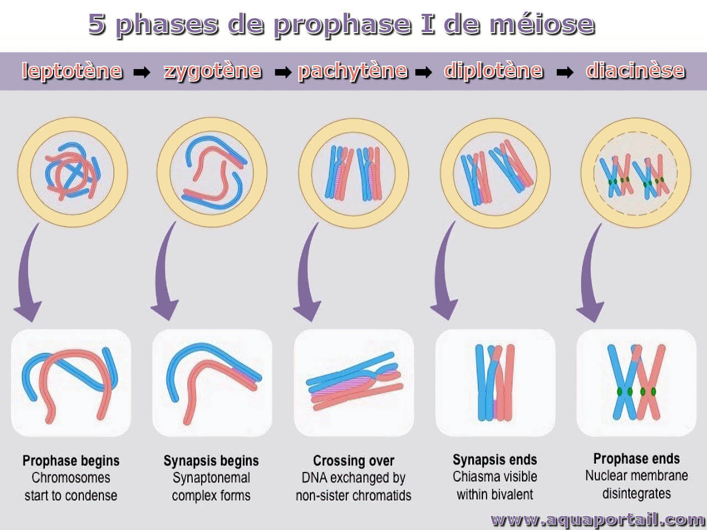
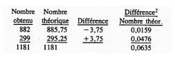

Semaine 2 - La substance de l'hérédité
1. Substance de l'Hérédité :
Avant les travaux d'Avery et al. (1944), beaucoup croyaient que l'hérédité était due aux protéines (P) parce que :
- Diversité des Protéines : 20 acides aminés permettent des structures/fonctions complexes.
- Rôles Biologiques Connus : Les protéines sont connues pour catalyser des réactions et remplir des fonctions essentielles.
- Mécompréhension de l'ADN : Le rôle de l'ADN était sous-estimé ; considéré comme une substance de réserve simple.
2. Expérience d'Inoculation de Virus :
Mélanges :
- (a) P I + P II → Pas de virions (uniquement des protéines).
- (b) N I + N II → Virions des souches I et II (ARN mélangé).
- (c) P I + N II → Virions de la souche II (ARN de II).
- (d) P II + N I → Uniquement des virions de la souche I (ARN de I).
3. Pourcentages des Bases Azotées :
Analyse de l’ADN d'une bactérie : 16,6% de thymine et 32,6% de guanine.
Calcul :
- Somme des autres bases : 100 - (16,6 + 32,6) = 50,8%
- Adénine (A) ≈ 17,14% (somme de thymine et guanine(50.8) * somme de thymine(16.6) / % manquant(49.2)
- Cytosine (C) ≈ 33,66% (même formule mais replace somme thymine par guanine)
Pourcentages : A ≈ 17,14%, T = 16,6%, C ≈ 33,66%, G = 32,6%
4. Phénomène Biologique Inexistant :
Si la substance de l’hérédité était invariante, le phénomène de l'évolution serait inexistant.
5. Rapport ADN dans l'Expérience de Meselson et Stahl :
Si on poursuit l'expérience jusqu'à la génération 4, le rapport entre l'ADN de poids intermédiaire et celui de poids léger serait de 2:14.
6. Types d'ADN à la Génération 4 (Réplication Dispersive) :
À la génération 4, il y aurait un seul type d'ADN, un tout petit peu plus lourd que l’ADN 14N.
7. Durant la synthèse de l'ÀDN, dans quelle direction se fait l'addition des nucléotides individuels sur la nouvelle chaine?
Elle se fait sur la nouvelle chaîne de 5' vers 3', c'est-à-dire que les nucléotides sont ajoutés à l'extrémité 3' de la chaîne en croissance.
8. Si une chaine d'ADN se lit: 5'ATCGGACT3', sa chaine complémentaire sera:
La chaîne complémentaire d'une séquence d'ADN est formée en respectant les règles de complémentarité des bases :
A (adénine) s'apparie avec T (thymine) C (cytosine) s'apparie avec G (guanine) La séquence d'ADN donnée est : 5'ATCGGACT3'. La chaîne complémentaire sera :
A -> T
T -> A
C -> G
G -> C
G -> C
A -> T
C -> G
T -> A
Comme en (a), la chaîne complémentaire sera la même : 5'TAGCCTGA3'.
9. L'ADN double brin contient 50% de purines et 50% de pyrimidines. Si la teneur en % de l'une des bases azotées est connue, peut-on connaitre celles des autres bases?
Oui, parce qu'une purine est toujours associée à une pyrimidine. Par exemple, si T = 15%, alors A = 15%, donc G + C = 70%. Ainsi, G et C = 35% chacun.
10. On a déterminé la teneur en l'une des quatre bases de 3 échantillons d'ADN. Ses résultats se présentent comme suit:
| Échantillon | Base analysée | Pourcentage |
|---|---|---|
| 1 | cytosine | 15 |
| 2 | guanine | 15 |
| 3 | thymine | 15 |
C'est l'échantillon 3, provenant d'un organisme où A + T/G + C = 30/70, alors que les échantillons 1 et 2 proviennent d'organismes avec A + T/G + C = 70/30.
11. Termes à Définir
- Procaryote : Organisme unicellulaire dépourvu de noyau et d'organites membraneux, tel que les bactéries.
- Phage Tempéré : Virus qui infecte les bactéries et peut se reproduire de manière lysogène, intégrant son ADN dans le génome de l'hôte.
- Prototrophe : Organisme capable de synthétiser tous les nutriments nécessaires à sa croissance à partir de sources simples.
- Eucaryote : Organisme dont les cellules possèdent un noyau bien défini et des organites membraneux, incluant les plantes, les animaux et les champignons.
- Bactérie Lysogène : Bactérie qui héberge un phage tempéré dans son ADN sans lyse cellulaire immédiate.
- Auxotrophe : Organisme qui nécessite des nutriments spécifiques qu'il ne peut pas synthétiser lui-même.
- Virus : Agent infectieux acellulaire qui ne peut se reproduire qu'à l'intérieur des cellules hôtes.
- Clone : Groupe de cellules ou d'organismes génétiquement identiques dérivés d'une seule cellule ou d'un seul individu.
- Conjugaison : Processus de transfert de matériel génétique entre bactéries via un contact direct, souvent par un pilus.
- Bactérie : Micro-organisme unicellulaire procaryote, jouant un rôle essentiel dans divers écosystèmes.
- Parasexualité : Échange de matériel génétique entre cellules sans reproduction sexuée, courant chez certaines bactéries et champignons.
- Milieu Minimum : Milieu de culture contenant uniquement les nutriments essentiels nécessaires à la croissance d'un organisme.
12. Quelles sont les affirmations vraies ?
- a) Les gènes bactériens sont portés par un seul chromosome linéaire. Faux
- b) Les phages intégrés dans le chromosome bactérien sont dits lysogènes. Faux
- c) L'auxotrophie correspond à la capacité d'une bactérie à proliférer sur milieu minimum. Faux
13. Quelles sont les affirmations vraies ?
- a) Le facteur F n'est pas intégré dans le chromosome d'une bactérie Hfr. Faux
- b) Les pili sexuels relient deux bactéries F+ lors de la conjugaison. Faux
- c) Le transfert d'ADN d'une bactérie Hfr vers une bactérie F- est unidirectionnel. Vrai
- d) C'est sous la forme monobrin que l'ADN est transféré lors de la conjugaison. Vrai
14. Bactérie de type F
Une bactérie qui possède le facteur F peut le transférer à une bactérie qui ne le possède pas. Ainsi, des bactéries auxotrophes peuvent devenir prototrophes. Par quel phénomène peut s’effectuer le transfert des gènes menant à la prototrophie ?
Le transfert des gènes menant à la prototrophie peut s’effectuer par conjugaison.
Deux situations qui permettraient ce transfert :
- 1. Lorsqu'une bactérie F+ transfère son ADN à une bactérie F- via un pilus sexuel.
- 2. Lorsqu'une bactérie Hfr transfère une partie de son ADN chromosomique à une bactérie F- pendant la conjugaison.
Semaine 3 - Mitose, Méiose
1. Processus : Autoduplication
Un chromosome persiste à travers les générations de cellules et d'individus par :
- Autoduplication : Réplication lors de la division cellulaire.
- Transmission héréditaire : Transmission du matériel génétique par les gamètes.
- Mécanismes de réparation de l'ADN : Correction des mutations pour stabiliser le matériel génétique.
- Évolution et sélection naturelle : Adaptation par mutation et sélection des chromosomes avantageux.
2. Méiose à gauche, double division, mitose à droite.

3. Nombre Chromosomique de Cannabis sativa
Le nombre chromosomique somatique de Cannabis sativa est 2n = 20. Voici le nombre de chromosomes pour différents types de cellules :
| Type de cellule | Nombre de chromosomes |
|---|---|
| Microsporocyte de 1er ordre | 20 |
| Microspore | 10 |
| Noyau de la cellule végétative | 10 |
| Synergide | 10 |
| Noyau du zygote | 20 |
| Noyau de cellule embryonnaire | 20 |
| Noyau d'une cellule d'albumen | 30 |
4. Définitions
- Homologue : Se dit de chromosomes qui ont la même structure et la même séquence de gènes, mais peuvent avoir des allèles différents. Un organisme diploïde possède une paire de chromosomes homologues.
- Cytocinèse : Processus par lequel le cytoplasme d'une cellule se divise, aboutissant à la formation de deux cellules filles distinctes, généralement après la mitose ou la méiose.
- Carotype : Représentation graphique du nombre, de la forme et de la taille des chromosomes d'un organisme, généralement obtenue à partir de cellules en division.
- Interphase : Phase du cycle cellulaire où la cellule se prépare à la division. Elle est subdivisée en trois étapes : la phase G1 (croissance), la phase S (réplication de l'ADN) et la phase G2 (préparation à la mitose).
- Division équationnelle : Type de division cellulaire (mitose) où le nombre de chromosomes reste constant, chaque cellule fille recevant une copie complète du matériel génétique.
- Idéogramme : Représentation graphique simplifiée du caryotype, illustrant les chromosomes d'un individu en mettant l'accent sur leur taille, leur forme et leur nombre.
- Mitose : Processus de division cellulaire qui permet la formation de deux cellules filles génétiquement identiques à la cellule mère, impliquant plusieurs étapes : prophase, métaphase, anaphase et télophase.
- Anaphase : Étape de la mitose durant laquelle les chromatides sœurs se séparent et sont tirées vers les pôles opposés de la cellule, assurant ainsi que chaque cellule fille recevra un ensemble complet de chromosomes.
5. Nombre de Chromatides chez l'Homme (2n = 46)
Le nombre de chromatides à différentes phases de la mitose est le suivant :
- (a) Prométaphase mitotique : 92 chromatides
- (b) Anaphase mitotique : 0 chromatides, car les chromosomes ne sont pas encore dédoublés en chromatides à ce stade.
6. Variation Héréditaire chez les Espèces Asexuées
Les espèces qui ne se reproduisent qu'asexuellement, avec des divisions cellulaires exclusivement mitotiques, auront une variation héréditaire :
Non. La mitose est une division équationnelle, produisant des cellules identiques. En revanche, la méiose, par la ségrégation aléatoire des homologues et le crossing-over, génère de nouvelles combinaisons de chromatides, ce qui constitue une source inépuisable de variation héréditaire.
7. Nombres Chromosomiques dans les Croisements de Cannabis sativa
Pour les croisements entre les souches diploïdes (2n = 20) et tétraploïdes (2n = 40), les résultats sont les suivants :
Croisement 2x ♀ x 4x ♂
- Embryon : 10 + 20 = 30
- Albumen : 20 + 20 = 40
Croisement réciproque 4x ♀ x 2x ♂
- Embryon : 20 + 10 = 30
- Albumen : 40 + 10 = 50
8. Recombinaison Méiotique
Parmi les énoncés suivants, lequel est faux ?
-
a. Toutes les chromatides-soeurs d’un même chromosome recombinent toujours au même endroit avec les chromatides-soeurs du chromosome homologue. (Faux)
- b. Les chiasmas commencent à se former lors du stade diplotène. (Vrai)
- c. Elle permet un brassage génétique performant lors de la formation des gamètes. (Vrai)
- d. Elle nécessite deux fractures distinctes sur les chromosomes homologues. (Vrai)
9. Définition d’un « Gamétophyte »
La meilleure définition d’un « gamétophyte » ?
- Bien que produit par la méiose, le gamétophyte est le résultat de plusieurs mitoses de cellules haploïdes.
10. Image des 5 sous-phases des chromosomes
Semaine 4 - Mendel 1
4-1. S'il n'y avait pas de ségrégation des chromosomes à la méiose, quels gamètes obtiendrait-on à partir d'un individu Aa ?
Réponse : 100% Aa et non pas 50% A et 50% a.
4-2. Chez la Tomate, la chair du fruit peut être rouge ou jaune. Une série de croisements a donné les résultats suivants :
| Croisement | Progéniture |
|---|---|
| (a) rouge x rouge | 150 rouges |
| (b) rouge x jaune | 175 rouges |
| (c) rouge x jaune | 78 rouges : 80 jaunes |
| (d) jaune x jaune | 168 jaunes |
| (e) rouge x rouge | 125 rouges : 40 jaunes |
Réponse : Rouge est le caractère dominant. Si A = rouge et a = jaune, les génotypes des parents de chaque croisement sont :
- (a) AA et AA ou l'un AA et l'autre Aa
- (b) AA et aa
- (c) Aa et aa
- (d) aa et aa
- (e) Aa et Aa
4-3. Chez les bovins de race Holstein, la pigmentation de la robe par taches irrégulières est récessive, alors que la pigmentation continue est dominante. Si un éleveur préfère un troupeau d'animaux irrégulièrement tachetés, quel génotype de parents choisira-t-il ?
Réponse : Il choisira des parents irrégulièrement tachetés (caractère récessif) et en ce faisant, il éliminera l'allèle dominant.
4-4. Chez les bovins de certaines races, la robe est rouge, blanche ou rouanne. À partir des résultats indiqués ci-après, nommez le phénomène en cause et indiquez les génotypes des types d'individus mentionnés.
Réponse : Tous les faits présentés dans les croisements s'interprètent parfaitement s'il on suppose qu'il s'agit d'un cas d'absence de dominance.
En représentant "robe rouge" par A et "robe blanche" par A', les génotypes sont :
- (a) AA × AA = AA
- (b) A'A' × A'A' = A'A'
- (c) AA × A'A' = AA'
- (d) AA' × A'A' = 1 AA' : 1 A'A'
- (e) AA' × AA = 1 AA' : 1 AA
- (f) AA' × AA' = 2AA' : 1 AA : 1 A'A'
4-5. Chez le Pois de jardin, on observe des variétés à fleurs rouges et à fleurs blanches...
Réponse :
- (a) Fleur rouge est dominant et fleur blanche est récessif ;
- (b) RR = à fleurs rouges et rr = à fleurs blanches ;
- (c) tous deux Rr ;
- (d) à fleurs rouges = Rr, à fleurs blanches = rr ;
- (e) deux types dans le rapport 1R : 1r.
4-6. Chez la Mouche à fruits, Drosophila melanogaster, un croisement entre deux mouches aux ailes longues (P1) a donné une F1 de 250 individus aux ailes longues et 80 aux ailes vestigiales (réduites à des moignons). En croisant entre eux les individus aux ailes vestigiales, on obtient seulement d'autres individus aux ailes vestigiales. Lorsque des individus aux ailes longues de la F1, lorsque croisés à des individus aux ailes vestigiales, se répartissent en deux groupes : 87 ne donnent que des descendants aux ailes longues et 163 des descendants aux ailes longues ou aux ailes vestigiales dans le rapport approximatif de 1:1.
Réponse :
- (a) Le caractère dominant est les ailes longues (Vg+).
- (b) Le caractère récessif est les ailes vestigiales (vg).
- (c) Les génotypes des deux mouches de la P1 sont Vg+Vg+ et vgvg.
- (d) Les génotypes des descendants de F1 avec ailes longues sont Vg+vg.
- (e) Les génotypes des parents d'un croisement dans la progéniture duquel on n'observe que des individus aux ailes vestigiales sont vgvg × vgvg.
- (f) Les génotypes des parents d'un croisement dans la progéniture duquel on observe approximativement 1 individu aux ailes longues : 1 individu aux ailes vestigiales sont Vg+vg × vgvg.
4-7. L'Avoine se reproduit par autofécondation et ses grains peuvent être blancs ou jaunes. Un croisement « grain jaune × grain blanc » a donné seulement des plantes à grains jaunes qui, par autofécondation, ont produit une F2 dans laquelle il y avait 3 fois plus de plantes à grains jaunes que de plantes à grains blancs.
Réponse :
- (a) Le caractère dominant est le grain jaune.
- (b) Le parent de la P1 croisé est homozygote pour le grain jaune (YY) et le parent à grain blanc est homozygote récessif (yy).
- (c) Pour déterminer les individus F2 hétérozygotes (Yy), il faut faire un test de croisement avec un individu homozygote récessif (yy). Les individus donnant des descendants à grains jaunes et blancs sont hétérozygotes, tandis que ceux ne donnant que des grains jaunes sont homozygotes.
4-8. Chez l'Homme, certaines maladies graves et fatales, par ex. la chorée de Huntington, sont héréditaires et de type dominant, et ne se manifestent que vers la cinquantaine. Un homme de 20 ans, normal, apprend que sa mère a une telle maladie. Quelle est la probabilité qu'il aura lui-même cette maladie ?
Réponse : Sa mère est presque certainement hétérozygote (Aa) parce que ces maladies sont rares. La probabilité que cet homme ait reçu l'allèle A de sa mère est donc de 1/2.
4-9. L'albinisme (absence de pigment dans la peau, les yeux et les poils) chez l'Homme est rare, et se présente comme suit :
Réponse :
- (a) aa × aa = aa.
- (b) Aa × aa = Aa : aa = 1:1.
- (c) Aa × Aa = 3:1.
4-10. Une femme de groupe sanguin A a un enfant de groupe 0, dont elle attribue la paternité à un homme de groupe B. Cet homme peut-il être le père de cet enfant ?
Réponse : Oui, car l'homme peut être de génotype BO, et la femme peut être de génotype AO.
4-11. Dans l'un de ses livres, Darwin a présenté les résultats de nombreux croisements qu'il fit entre les deux (distylie) ou trois (tristylie) formes d'espèces hétérostylées...
Réponse : Brévistylée est un caractère dominant et longistylé est un caractère récessif.
- (a) AA ;
- (b) Aa ;
- (c) aa ;
- (d) 1 AA : 2 Aa : 1 aa ;
- (e) 1 longistylée.
Semaine 5 - Mendel 2
5-1. Quel avantage y a-t-il à choisir un organisme comme la Drosophile pour étudier l’hérédité?
Réponse : La Drosophile a une génération rapide d'environ douze jours, un nombre élevé de descendants par couple et des gènes faciles à observer. Elle est également peu coûteuse à cultiver.
5-2. Mendel a croisé une variété de pois à graine ronde et jaune par une variété à graine ratatinée et verte. Les graines de la F₁ étaient toutes rondes-jaunes. La F₂ obtenue par autofécondation se présente comme suit : 315 graines rondes-jaunes, 101 ratatinées-jaunes, 108 rondes-vertes, 32 ratatinées-vertes. (a) Combien de paires de facteurs sont impliquées dans la détermination des caractères de la graine de pois? (b) Y a-t-il dominance et si oui, quel type? (c) Le rapport phénotypique de la F₂ est-il conforme aux prévisions?
Réponse :
- (a) Deux paires de facteurs sont impliquées (couleur et forme de la graine).
- (b) Il y a dominance pour la forme ronde (R) sur la ratatinée (r) et pour le jaune (Y) sur le vert (y).
- (c) Le rapport phénotypique observé de 9:3:3:1 correspond aux prévisions pour un dihybridisme.
5-3. Quels nombres théoriques d’individus correspondent, dans la F₂, du croisement de Mendel rapporté ci-dessus, au rapport génotypique inhérent dans le rapport 9:3:3:1 ?
Réponse : Le nombre théorique d’individus correspondant serait de 556 graines: 315 rondes-jaunes, 101 ratatinées-jaunes, 108 rondes-vertes, 32 ratatinées-vertes.
5-4. Si le rapport phénotypique dihybride de F₂, 9:3:3:1, n’est que le produit de deux rapports phénotypiques monohybrides (3:1), à quoi correspond le rapport génotypique de F₂, 1:2:2:4:1:2:1:1 ?
Réponse : Le rapport génotypique 1:2:1 est celui de deux croisements monohybrides, et le produit de ces rapports donne le rapport phénotypique global observé de 9:3:3:1.
5-5. Quels sont les génotypes des gamètes produits par le dihybride VvGgF₁ ?
Réponse : Les gamètes produits par le dihybride VvGg sont VG, Vg, vG, et vg.
5-6. Chez le Lapin, robe rude (D) domine robe douce (d) et robe noire (B) domine robe blanche (b). Ces deux paires de gènes sont indépendantes. Si vous croisez un lapin homozygote à robe rude et noire par un individu à robe douce et blanche, quels seront : (a) le génotype et le phénotype de la F1; (b) les génotypes et phénotypes de la F2, avec leurs rapports numériques; (c) le phénotype, le génotype et la distribution numérique de la progéniture issue d'un croisement entre le parent à robe rude-noire de la P1 et un individu de la F1 ; ( d) le phénotype, le génotype et la distribution numérique de la progéniture d'un croisement entre le parent à robe douce-blanche de la P1, et un individu de la F1.
Réponse :
- (a) DdBb à robe rude-noire;
- (b)1DDBB :2DdBB :2Ddbb :4DdBb :1DDbb :2DDBb :1ddBB :2ddBb:lddbb Donc 9 rude-noire ; 3 rude-blanche ; 3 douce-noire ; 1douce-blanche
- (c) tous rude-noire: lDDBB:1DDBb:1DdBB:1DdBb.
- (d) 1DdBb : 1Ddbb : lddBb : lddbb
5-7. En croisant deux lapins à robe rude-noire, on obtient une progéniture de deux petits, dont un est à robe rude-noire et l’autre à robe douce-noire. Quels sont les génotypes des parents ?
Réponse : Les parents sont DdBb x DdBb. Les génotypes des petits sont DdBb et ddBb, expliquant les phénotypes observés.
5-8. Chez la Tomate, tige géante domine tige naine et feuille à folioles pinnatipartites domine feuille à folioles entières. Le pollen d'une plante à tige géante et à folioles pinnatipartites sert à féconder deux autres plantes, l'une à tige géante et à folioles entières (plante A) et l'autre à tige naine et à folioles pinnatipartites (plante B). La plante A donne une progéniture dans laquelle il y a des plantes à tige géante et à folioles entières, et dans la progéniture de la plante (B) on observe des plantes à tige naine et à folioles pinnatipartites. Quel est le génotype de la plante utilisée comme donneuse de pollen?
Réponse : Les génotypes des parents sont GGff (tige géante, folioles entières) et ggFF (tige naine, folioles pinnatipartites). La progéniture de F₁ serait 100% GgFf, avec tous les phénotypes géants et folioles pinnatipartites.
5-9. Chez l’Orge, albumen Starchy (Wx) domine albumen waxy (wx) et plantule verte (Po) domine plantule orange (po). Quels sont les génotypes des parents ?
Réponse : Les parents sont WWxxPoPo (albumen starchy, plantule verte) et wwxxpopo (albumen waxy, plantule orange). La F₁ montre tous les individus avec un albumen starchy et une plantule verte (WxWxPoPo). On croise une plante à albumen starchy et orangée par une plante à albumen waxy et verte. Tous les nombreux individus de la F1 ont un albumen starchy et sont verts. Quels sont les génotypes des parents?
5-10. Un individu est homozygote quant à deux gènes représentés par des allèles dominants et quant à trois autres représentés par des allèles récessifs. Combien de types de gamètes va-t-il produire?
Il produira un seul type de gamètes puisque son génotype est AABBccddee.
5-11. Combien un individu AabbCcDdeeFfggHH produira-t-il (a) de gamètes différents? (b) de génotypes différents, par autofécondation? (c) de génotypes différents, si on les croise à un homozygote récessif pour tous les gènes.
(a) 24 ou 16; (b) 34 ou 81; (c) 16.
5-12. Déterminez les phénotypes, les génotypes et leur rapports respectifs dans la progéniture F2 d'un croisement entre AAbbcc x aabbCC.
La F1 étant AabbCc, la F2 sera: 1AAbbCC : 2AabbCC : 2AAbbCc :4AabbCc :1AAbbcc :2Aabbcc : laabbCC :2aabbCc :1aabbcc donc au total 9 A-bC- :3 A-bc :3 abC- :l abc.
5-13. Combien y aura-t-il de génotypes totalement homozygotes dans la progéniture de F2 d'un croisement tétrahybride?
16, i.e. un pour chacune des classes phénotypiques, en supposant qu'il y ait dominance complète pour chacune des paires d'allèles, ou un par rangée de l'échiquier de Punnett de 16 x 16 qui correspond à la F2 d'un tel croisement.
5-14. Le nombre de génotypes différents est de 3n dans la F2 d'un croisement polyhybride, mais le nombre de phénotypes différents n'est que de 2n s'il y a dominance pour toutes les paires de facteurs. Quel phénomène produit une F2 de croisement polyhybride dans laquelle le nombre de phénotypes est égal au nombre de génotypes?
La dominance incomplète.
5-15. On a dit que le testcross permet de déterminer le génotype inconnu parce que sa progéniture exprime la nature et le nombre des différents types de gamètes produits par ce génotype. Pourquoi en est-il ainsi?
Parce que dans le testcross, les gamètes du parent à génotype connu ne fournissant que des allèles récessifs, tous ceux du parent testé, récessifs comme dominants, s'expriment dans la progéniture, révélant ainsi la nature de tous les allèles constitutifs du génotype inconnu.
5-16. Chez le Maïs, plante verte domine plante jaune-verdâtre et plante ligulée domine plantule sans ligule, et ces deux couples de caractères sont déterminés par des gènes indépendants. Si une plante homozygote verte et sans ligule est croisée à une plante homozygote jaune -verdâtre avec ligule, combien d'individus prévoira-t-on obtenir dans chacune des classes d'un testcross impliquant la F1 et une progéniture de 378 individus?
Représentons plante verte par A et plante jaune-verdâtre par a, et plantule ligulée par B et plantule sans ligule par b. P1 AAbb x aaBB; F1 AaBb; testcross AaBb x aabb: 94,5 AaBb (vertes ligulées) : 94,5 Aabb (vertes sans ligule) : 94,5 aaBb (jaunes verdâtres ligulées) : 94,5 aabb (jaunes-verdâtres sans ligule).
5-17. Si la fréquence des albinos de type récessif est d'environ 1 par 20,000 individus en Europe, qu'elle est la probabilité que les deux prochains enfants à naître sur ce continent seront albinos?
Ces deux enfants étant deux enfants quelconques, c'est-à-dire indépendants l'un de l'autre, la probabilité qu'ils seront tous deux albinos est de 1⁄20000 x 1⁄20000.
5-18. Quelle est la probabilité que l'un de ces enfants sera albinos et l’autre normal.
La question n'implique que des couples d'enfants. Si on considère la constitution de tous les couples possibles, on voit qu'il peuvent être formés par: (a) deux normaux (19999/20000)² ou (b) un normal suivi d'un albinos (19999/20000 x 1/20000) ou (c) un albinos suivi d'un normal (1⁄20000 x 19999/20000) ou de deux albinos (1/20000)². La probabilité que l'un sera normal et l'autre albinos i.e. sans distinction quant à l'ordre de la naissance est de [(19999/20000 x 1/20000) + (1⁄20000 x 19999/20000)].
5-19. Quelle est la probabilité que le prochain enfant à naître dans une famille où il y a déjà eu naissance d’un enfant albinos (famille comportant deux parents normaux), sera un enfant albinos?
1⁄4
5-20. Quelle est la probabilité que les familles de 8 enfants contiendront : (a) 8 filles ; (b) 6 filles et 2 garçons; (c) 6 filles et 2 garçons ou 2 filles et 6 garçons.
Pour trouver le coefficient approprié, consultez la diapositive avec le Triangle de Pascal n=8; p = fille = 1/2; q = garçon = 1/2; (a) p8 ou (1/2)8 ; (b) 28/256; (c) (28/256 + 28/256)
5-21. Deux personnes normales ont un fils albinos et une fille normale. (a) Quelle est la probabilité que la fille est porteuse du gène de l'albinisme? (b) Si cette fille épouse un homme normal, mais dont le frère était albinos, qu'elle est la probabilité qu'un de leurs enfants sera albinos?
(a) La fille est AA ou Aa et comme dans la progéniture de Aa x Aa il y a 1AA : 2Aa, la fille a 2 chances sur 3 d'être porteuse du gène de l'albinisme. (b) Cette probabilité est 2/3 x 2/3 x 1⁄4 = 4/36 = 1/9
5-22. La fibrose kystique est une maladie déterminée par un allèle récessif. Environ un individu sur 20 est porteur de cet allèle. Quelle est la probabilité que les deux prochaines naissances entre individus normaux seront celles d'enfants affectés?
Puisque dans la population générale, un individu sur 20 est porteur, la fréquence des unions entre deux hétérozygotes est 1⁄20 x 1⁄20 = 1⁄400. Puisque la probabilité qu'un enfant affecté naisse d'une union entre deux hétérozygotes est de 1⁄4, la probabilité qu'un enfant affecté naisse d'une union entre deux conjoints normaux issus de la population générale est de 1⁄4 x 1⁄400 = 1/1600. Enfin, la probabilité que les deux prochaines naissances seront celles d'enfants affectés est 1⁄1600 x 1/1600.
Dans son croisement monohybride entre deux variétés de pois, l'une à gousses gonflées et l'autre à gousses monoliformes, Mendel a obtenu, à la F2, 882 plantes à gousses gonflées et 299 à gousses monoliformes. Faites un test de c2 pour déterminer si cette distribution correspond à un rapport 3: 1.
La probabilité qui correspond à une valeur de X2 de 0,0635, pour 1degré de liberté, se situe entre 70% et 90% (voir tableau approprié). L’hypothèse d’une distribution 3 :1 est fort plausible
